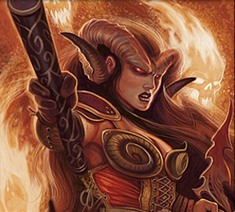

Places
People
Groups
Information not
revealed until later

Second child of Thrand U'Squiel (ranger of the Stagrunner elves) and a tiefling warlock, Kallista found little acceptance among her father's family as a tielfing. That and
the general aloofness of the elves made her father distant, and in reaction to that pain she rejected the calming influence of her father's nature and
gave into the evil pull of her infernal heritage - resorting to alcohol, drugs, and eventually crime. Her vices have spiraled on multiple occasions,
encouraged by her friend Festivus' flamboyance and tempered by her sister Karrion's redemptive nature.